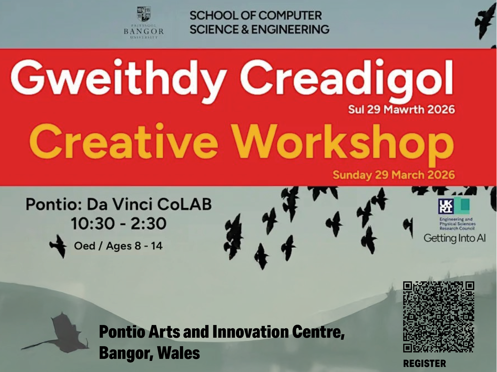

Overview
Dive into creativity and discovery at our hands-on Art & Science Creative Workshop—where ideas come alive!
This interactive session explores how artificial intelligence works through sound, pattern, and creative experimentation. No coding experience is needed—just curiosity and imagination.
Dates and Venue
- Date: Sunday, 29 March 2026
- Time: 10:30 AM – 2:30 PM
- Venue: Pontio Arts and Innovation Centre, Bangor, Wales

Workshop Activities
The workshop features a range of hands-on activities, including:
- Sonic Training: Train a computer to recognise sounds such as snaps, claps, and whispers in real time.
- Pattern Recognition: Explore how AI identifies and categorises patterns in nature.
- Creative Data Sculpting: Transform environmental data into physical sculptures using paper-folding techniques.
Participants will work together to build a collaborative art installation inspired by AI and the natural world.
Who Can Attend
- Ages: Suitable for children aged 8–14
- Family Participation: Adults must attend with a child
- Tickets: Each attendee (adult and child) requires a ticket
This is a collaborative family workshop designed to make AI accessible, creative, and fun.
Additional Information
- Food and drink will be provided
- Please inform organisers of any dietary requirements in advance
Join the Workshop
Spaces are limited—reserve your place now!
Book Tickets